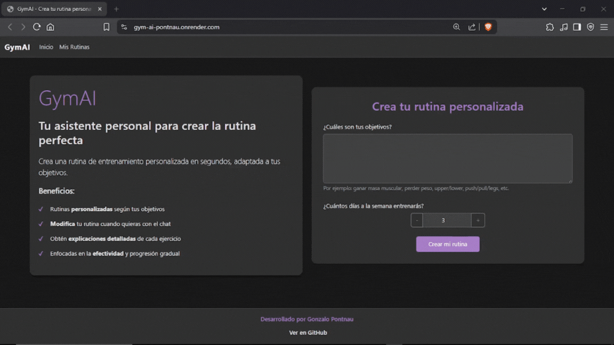

Halo üëãüèº, saya
Muhammad
Raykram
Pengembang Situs Web
Tentang Saya
Tecnologías
Python
HTML
CSS
JavaScript
Linux
Pengalaman Kerja
Pengembang Situs Web
Sep 2023 - Sekarang
Mis Proyectos


GymAI - Tu personal TrAIner
Aplicación web que utiliza IA (Google Gemini) para crear rutinas de entrenamiento personalizadas y generar modificaciones mediante chat en tiempo real. Implementada con enfoque en calidad y pruebas automatizadas. (Espere unos segundos al ingresar en la web)
Python
FastAPI
WebSockets
SQLite/PostgreSQL
Pytest
AI chat
HTMX